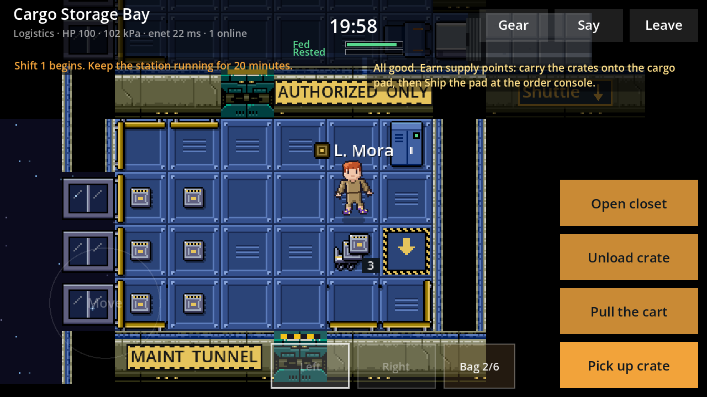
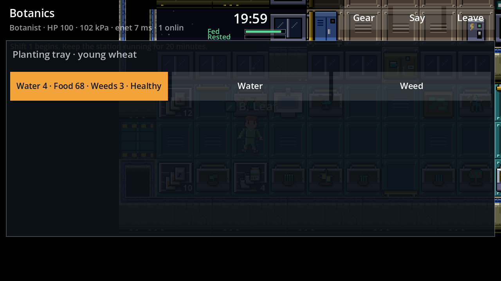
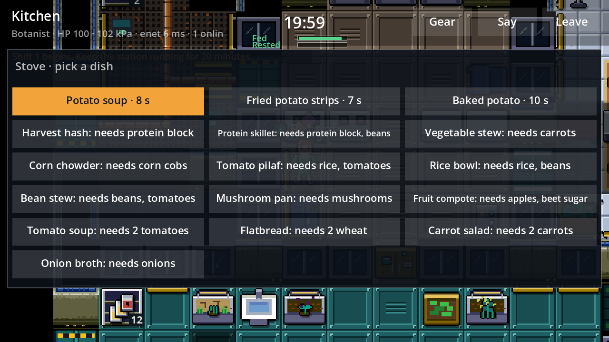
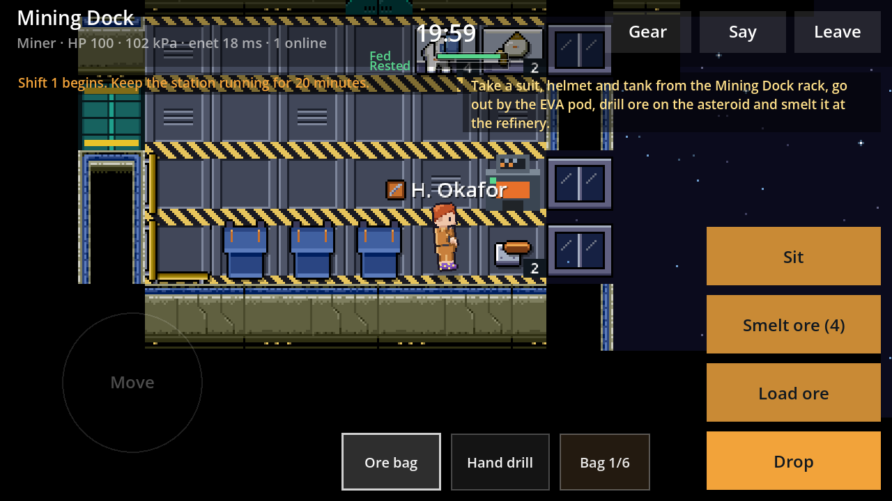

Jobs
Everybody can do everything. A job decides what you start with, where you start, and what you do twice as fast.
 Captain
Captain Head of Personnel
Head of Personnel Security Officer
Security Officer Lawyer
Lawyer Station Engineer
Station Engineer Medical Doctor
Medical Doctor Logistics
Logistics Botanist
Botanist Chef
Chef Bartender
Bartender Miner
Miner- Janitor
Captain 
The Captain runs the shift from the Bridge. Their ID card opens every door.
You start with
- In your hands: nothing
- Backpack:
 Backpack holding
Backpack holding  Standard Operating Procedures
Standard Operating Procedures - Pockets:
 Flashlight
Flashlight  Pen
Pen
Access
Card access: all areas. Starts in the Captain's Office. Their ID card opens the Bar (bar), the Botanics (botanics), the Bridge (command), the Captain's Office (command), the Head of Personnel's Office (command), the Head of Personnel's Bedroom (command), the Medbay (medical), the Surgery (medical), the Chemistry (medical), the Research and Development (science), the Robotics (science), the Genetics (science), the Security Office (security), the Brig (security), the Cargo Reception (cargo), the Cargo Storage Bay (cargo), the Mining Dock (cargo), the Janitor's Closet (maintenance), the Atmospherics (engineering), the Machine Workshop (engineering), the Electrical Workshop (engineering), the Construction Workshop (engineering), the Battery Room (engineering), the Inverter Room (engineering), the Transformer Room (engineering), the Solar Control (engineering), the EVA Airlock (engineering), the Cell 1 (security), the Kitchen (kitchen), the Morgue (medical), the EVA Airlock 2 (maintenance), the EVA Pod (engineering), the High-Voltage Kiosk (engineering), the Captain's Bedroom (command), the Captain's Restroom (command), the maintenance tunnels and every public room.
What you do
- Watch the station on the Bridge's screens and decide what matters most.
- Pick the sentence for a Class 3 offence and hear the Head of Personnel's reports.
- Lock and release cells with the all-areas card.
- Call the shuttle when the shift should end (the crew votes first).
Works with
The Head of Personnel (right hand), Security and the Lawyer.
Tips
- Ask on the radio before you decide: you see the whole station, but others see the problem.
- Do not wander off with the all-areas card: lost cards stay lost.

Head of Personnel 
The Head of Personnel looks after the crew's cards and jobs. They keep the offices and the Bridge in order.
You start with
- In your hands: nothing
- Backpack: Backpack holding
 Station Law
Station Law - Pockets: Flashlight Pen
Access
Card access: command. Starts in the Head of Personnel's Office. Their ID card opens the Bridge (command), the Captain's Office (command), the Head of Personnel's Office (command), the Head of Personnel's Bedroom (command), the Captain's Bedroom (command), the Captain's Restroom (command) and every public room.
What you do
- Work the ID console: put a card in and give it another job's name and access (never a command job).
- Serve the HoP desk's window and roll its shutter up or down.
- Help the lost: someone without a card cannot open a door.
- Lock a cell with the command card when Security asks.
Works with
The Captain, the Lawyer and the whole crew at the desk.
Tips
- Every card change is logged and told to its owner, so say why on the radio.
- Give the right access, no more: Engineering and Medical doors guard dangerous things.

Security Officer 
The Security Officer keeps the peace and runs the Brig. There are no weapons in the game: only handcuffs, talk and the cells.
You start with
- In your hands: nothing
- Backpack: Backpack holding
 Handcuffs Handcuffs
Handcuffs Handcuffs - Pockets: Flashlight Pen
Access
Card access: security. Starts in the Security Office. Their ID card opens the Security Office (security), the Brig (security), the Cell 1 (security) and every public room.
What you do
- Patrol the corridors and answer calls for help.
- Cuff someone who holds still, then pull them to the Brig.
- Pick a sentence at the cell door panel (see Station Law) and take their belongings.
- Release a cell early if the person falls ill or the cell loses air.
- Write down every detention.
Works with
The Captain, the Lawyer and the Medical Doctor.
Tips
- Say your reason in one sentence before you stop anyone.
- Read the Law & SOP pages once: the sentences are on a table.

Lawyer 
The Lawyer sees that the law is followed. They work in the Law Office, which every card opens.
You start with
- In your hands: nothing
- Backpack: Backpack holding Station Law Standard Operating Procedures
- Pockets: Pen
Access
Card access: none beyond the public rooms. Starts in the Law Office. Their ID card opens every public room.
What you do
- Read both rule books (hold one and tap Read).
- Listen to the detained person, the officer and the witnesses.
- Say whether a charge stands, is lowered or is dropped.
- Tell Security and the Captain what the law says.
Works with
Security, the Captain and the Head of Personnel.
Tips
- A Lawyer cannot open a cell door: persuade, do not order.
- A petition made in good faith is never an offence.

Station Engineer 
The Station Engineer keeps the power on and the hull closed. The station goes dark without one, so the lobby marks it as prioritized.
You start with
- In your hands: nothing
- Belt:
 Toolbelt holding
Toolbelt holding  Wire cutters
Wire cutters  Welder
Welder  Cable coil
Cable coil  Screwdriver
Screwdriver  Multitool
Multitool  Crowbar T-ray scanner
Crowbar T-ray scanner  Wrench
Wrench - Backpack: Backpack holding
 Air tank
Air tank - Wearing:
 Hazard vest
Hazard vest  Insulated gloves
Insulated gloves  Welding goggles
Welding goggles  Hard hat
Hard hat
Access
Card access: engineering, maintenance. Starts in the Machine Workshop. Their ID card opens the Janitor's Closet (maintenance), the Atmospherics (engineering), the Machine Workshop (engineering), the Electrical Workshop (engineering), the Construction Workshop (engineering), the Battery Room (engineering), the Inverter Room (engineering), the Transformer Room (engineering), the Solar Control (engineering), the EVA Airlock (engineering), the EVA Airlock 2 (maintenance), the EVA Pod (engineering), the High-Voltage Kiosk (engineering), the maintenance tunnels and every public room.
What you do
- Patch hull breaches and reinforce worn or cracked walls before they open.
- Find the gap in a cut cable and lay cable over it.
- Walk the truss in an EVA suit to clean, tighten and replace solar parts.
- Reset charge controllers, swap failing battery cells and inverter modules.
- Make spare parts at the lathe; rewind the transformer when its winding is gone.
- Open a door's maintenance panel to cut, mend or pulse its wires.
- Twice as fast at: patch a breach, open or close a door's panel, lift a floor tile, strip a hull wall's plating, wrench a pipe loose or tight, lay a pipe, cut a pipe and reinforce a worn hull wall.
Works with
Logistics (plates and parts), the Janitor (tunnels) and Security (hacked doors).
Tips
- Look at the outer walls on every round: a stain is cheap to fix, a hole is not.
- Hang a lockout tag on every breaker before you touch the transformer.


Medical Doctor 
The Medical Doctor keeps the crew alive. Whoever falls must be treated in time; the dead can be revived for a short while.
You start with
- In your hands: nothing
- Belt: Medical belt holding
 Defibrillator
Defibrillator  Health analyzer
Health analyzer - Backpack: Backpack holding
 First aid kit Air tank
First aid kit Air tank - Wearing:
 Lab coat Latex gloves
Lab coat Latex gloves  Sterile mask
Sterile mask  Stethoscope
Stethoscope
Access
Card access: medical. Starts in the Medbay. Their ID card opens the Medbay (medical), the Surgery (medical), the Chemistry (medical), the Morgue (medical) and every public room.
What you do
- Scan people with the health analyzer and treat them with the first aid kit.
- Revive someone with the defibrillator within the revive window.
- Read the crew monitor to see who is hurt and where.
- Treat colds and flu with cold medicine; work in Surgery and the Morgue.
- Twice as fast at: treat someone, revive someone and listen to someone.
Works with
Security (the detained), the Captain and everyone who gets hurt.
Tips
- Ask people to set their suit sensors to Vitals or more.
- Carry an air tank: a breached room is where people fall.


Logistics 
Logistics runs supply and cargo. They approve orders and load the delivery pad.
You start with
- In your hands: nothing
- Backpack: Backpack holding Crowbar
 Cargo stamp
Cargo stamp - Pockets: Pen
Access
Card access: cargo. Starts in the Cargo Reception. Their ID card opens the Cargo Reception (cargo), the Cargo Storage Bay (cargo), the Mining Dock (cargo) and every public room.
What you do
- Approve or deny supply requests at the order console: approved orders land on the pad.
- Stamp order forms and file them in the filing cabinet for points.
- Ship the pad's goods away to earn points.
- Force doors open with a crowbar faster than anyone else.
- Twice as fast at: force a door open, approve a supply order and deny a supply request.
- Orders you approve land in 20 s instead of 40 s.
Works with
The Station Engineer (plates, parts, fertilizer), the Miner and the Botanist.
Tips
- Points are shared: spend them on what the station needs now.
- Answer the radio: a request waits until someone looks.


Botanist 
The Botanist grows the crew's food in the greenhouse. They plant, water, weed and harvest, and send the produce to the kitchen.
You start with
- In your hands: nothing
- Belt:
 Seed pouch holding
Seed pouch holding  Wheat seeds
Wheat seeds  Tomato seeds
Tomato seeds  Bean seeds Potato seeds
Bean seeds Potato seeds  Rice seeds
Rice seeds  Corn seeds
Corn seeds  Carrot seeds
Carrot seeds  Onion seeds
Onion seeds - Backpack: Backpack holding
 Watering can (empty)
Watering can (empty)
Access
Card access: botanics. Starts in the Botanics. Their ID card opens the Botanics (botanics) and every public room.
What you do
- Plant a seed in each tray from the seed pouch.
- Water, fertilize and weed the trays; treat sick plants with a spray.
- Harvest ripe plants and drop the produce into the pass-through cabinet.
- Keep an eye on the clock: each crop ripens on its own time.
- Twice as fast at: plant a seed, harvest a plant, water a tray, fill a watering can, fertilize a tray, pull the weeds of a tray, treat a sick plant and use the compost bin.
Works with
The Chef (the cabinet), Logistics (fertilizer, sprays, seeds) and the Bartender (fruit).
Tips
- Care work takes the Botanist half the time: do the rounds early.
- Check the tray with one tap: it says water, food, weeds and disease.
Crops
The greenhouse (Botanics, glass on all sides) has planting trays, a sink, a compost bin and racks of seeds of all 11 crops. The Botanist plants a seed (2 seconds), the plant ripens in 2 minutes to 6 minutes depending on the crop, and a harvest (3 seconds) gives its crop's produce (1 to 3, more when well tended) and the seed back. A few trays start the shift already growing, so the first harvest comes in a minute. Tray care has its own rules: see the Botanics page.
The seed pouch holds one seed of each crop of the first group; the second group's seeds lie on the greenhouse racks, and Cargo sells a seed of any crop.
| Crop | Group | Grows in | Water a minute | Nutrients a minute | Produce | Goes into |
|---|---|---|---|---|---|---|
| Wheat | 1 | 150 seconds | 20 | 12 | 2 | Flatbread, Malt tea |
| Tomato | 1 | 3 minutes | 24 | 16 | 2 | Tomato pilaf, Bean stew, Tomato soup, Tomato fizz |
| Bean | 1 | 210 seconds | 14 | 6 | 2 | Protein skillet, Rice bowl, Bean stew |
| Potato | 1 | 3 minutes | 16 | 16 | 3 | Harvest hash, Vegetable stew, Corn chowder, Potato soup, Fried potato strips, Baked potato |
| Rice | 1 | 4 minutes | 30 | 14 | 2 | Tomato pilaf, Rice bowl |
| Corn | 1 | 270 seconds | 20 | 22 | 2 | Corn chowder |
| Carrot | 1 | 150 seconds | 14 | 10 | 3 | Vegetable stew, Carrot salad |
| Onion | 1 | 3 minutes | 12 | 10 | 2 | Harvest hash, Vegetable stew, Corn chowder, Mushroom pan, Potato soup, Onion broth |
| Apple | 2 | 6 minutes | 10 | 14 | 3 | Fruit compote |
| Mushroom | 2 | 2 minutes | 12 | 8 | 1 | Mushroom pan |
| Sugar Beet | 2 | 4 minutes | 14 | 12 | 2 | Beet sugar |
Plant care
- Every planting tray keeps its own state: water (0 to 100), nutrients (0 to 100), weeds (0 to 3) and a disease flag (blight or aphids). Tap a tray (Check tray) for one line, 'Water 60 · Food 40 · Weeds 1 · Healthy', and for the buttons that fit what you hold. Anyone in reach may look: a tray's state is no secret.
- Water falls steadily while a plant grows (each crop has its own thirst) and a plant with none stops growing. It wilts only after 4 minutes with no water, and water brings it back. Fill a watering can at the sink in the greenhouse (Fill can, 3 seconds): it holds 4 waterings, and each Water (3 seconds, half that for the Botanist) adds 50.
- Nutrients fall as a plant eats. With 50 or more it grows 25 percent faster and, fed most of the time, gives one more produce; with none it grows 30 percent slower. A fertilizer sack has 5 uses (Fertilize, 4 seconds, adds 50); Cargo orders one for 3 supply points.
- Weeds come to a tray about every 2 minutes and each one slows the plant by 15 percent. Weed (4 seconds, by hand) pulls them all; they lie on the tile as weeds. The compost bin in the greenhouse takes them (Compost weeds): every 6 make one use of fertilizer, which a sack in the hand takes out again (Take fertilizer).
- A disease (blight or aphids) is rare. It slows the plant by 40 percent, shows as spots on the tray, and left alone for 3 minutes it moves to a healthy tray next to it. A plant spray (4 uses, Treat, 5 seconds) cures it; Cargo orders one for 2 supply points.
- Care costs time, not the harvest: a plant left dry, weedy, sick or hungry for 90 seconds in all still gives half its produce, and no job's absence starves the station. Weeding, watering, fertilizing and treating take 3 seconds to 5 seconds, half of that for the Botanist.
Dishes and drinks
The Chef cooks at the stove and picks a dish from one list that shows the ingredients still missing; the Bartender mixes at the bar's mixer. A dish fills the hunger meter by the percentage shown.
| Makes | At | Ingredients | Fills | Takes |
|---|---|---|---|---|
| Harvest hash | Stove | protein block and potatoes and onions | 65% | 12 s |
| Protein skillet | Stove | protein block and beans | 60% | 10 s |
| Vegetable stew | Stove | carrots and potatoes and onions | 52% | 12 s |
| Corn chowder | Stove | corn cobs and potatoes and onions | 56% | 11 s |
| Tomato pilaf | Stove | rice and tomatoes | 47% | 9 s |
| Rice bowl | Stove | rice and beans | 45% | 9 s |
| Bean stew | Stove | beans and tomatoes | 42% | 8 s |
| Mushroom pan | Stove | mushrooms and onions | 38% | 8 s |
| Potato soup | Stove | potatoes and onions | 40% | 8 s |
| Fried potato strips | Stove | 2 potatoes | 38% | 7 s |
| Fruit compote | Stove | apples and beet sugar | 34% | 8 s |
| Tomato soup | Stove | 2 tomatoes | 33% | 7 s |
| Flatbread | Stove | 2 wheat | 30% | 6 s |
| Carrot salad | Stove | 2 carrots | 25% | 6 s |
| Onion broth | Stove | 2 onions | 26% | 7 s |
| Baked potato | Stove | potatoes | 28% | 10 s |
| Tomato fizz | Bar mixer | tomatoes | 6% | 3 s |
| Malt tea | Bar mixer | wheat | 5% | 3 s |
| Beet sugar | Bar mixer | sugar beets | — | 3 s |


Chef 
The Chef cooks the crew's food in the kitchen. Without a Chef the ration dispenser feeds the crew, but meagrely.
You start with
- In your hands: nothing
- Backpack: Backpack
- Wearing: Apron
 Chef's hat
Chef's hat
Access
Card access: kitchen. Starts in the Kitchen. Their ID card opens the Kitchen (kitchen) and every public room.
What you do
- Take produce from the pass-through cabinet.
- Pick a dish at the stove from one list that shows what is still missing.
- Put the dishes on the serving counter: anyone may take from it.
- Twice as fast at: cook a dish.
Works with
The Botanist (produce) and the whole crew (hunger).
Tips
- Cook the biggest meals first: they fill the most.
- The hat and apron show on your sprite: spares are in the cabinet.
The dishes and what goes into them are in the Botanist's dish list.

Bartender 
The Bartender mixes drinks at the bar. Drinks are mild: a little food, no drunkenness.
You start with
- In your hands: nothing
- Backpack: Backpack holding
 Shaker
Shaker - Wearing:
 Bartender's vest
Bartender's vest
Access
Card access: bar. Starts in the Bar. Their ID card opens the Bar (bar) and every public room.
What you do
- Mix drinks at the bar's mixer.
- Shake cocktails with the shaker at the bar counter for whoever sits there.
- Keep the bar open: it is where the crew meets.
- Twice as fast at: mix a drink and shake a cocktail.
Works with
The Chef and Botanist (ingredients) and the crew at the counter.
Tips
- Nothing else depends on the bar: use quiet time to help elsewhere.
Miner 
The Miner works for Cargo. They go out through an EVA pod to the asteroid and bring back ore.
You start with
- In your hands:
 Hand drill
Hand drill  Ore bag
Ore bag - Backpack: Backpack holding Air tank
- Pockets: Flashlight
Access
Card access: cargo, maintenance. Starts in the Mining Dock. Their ID card opens the Cargo Reception (cargo), the Cargo Storage Bay (cargo), the Mining Dock (cargo), the Janitor's Closet (maintenance), the EVA Airlock 2 (maintenance), the maintenance tunnels and every public room.
What you do
- Put on a suit, helmet and tank from the Mining Dock's rack.
- Drill ore from the asteroid into the ore bag.
- Load the hopper at the refinery and smelt: plates from iron ore, copper bars from copper ore.
- Hand plates to the Station Engineer.
- Twice as fast at: drill ore from the asteroid and smelt ore.
Works with
Logistics and the Station Engineer.
Tips
- Check your tank before you go out.
- Plain rock gives nothing: leave it.


Janitor
The Janitor keeps the station clean and lit. Spills make people slip, and dark rooms hide trouble.
You start with
- In your hands:
 Mop
Mop  Bucket (empty)
Bucket (empty) - Backpack: Backpack holding
 Box of lightbulbs
Box of lightbulbs  Wet floor sign Wet floor sign
Wet floor sign Wet floor sign - Pockets: Flashlight
Access
Card access: maintenance. Starts in the Janitor's Closet. Their ID card opens the Janitor's Closet (maintenance), the EVA Airlock 2 (maintenance), the maintenance tunnels and every public room.
What you do
- Mop puddles (fill the bucket at a sink first).
- Put a wet floor sign where a puddle waits.
- Replace the bulbs that burn out in the rooms' lamps.
- Use the maintenance tunnels to move around.
- Twice as fast at: fill a bucket, mop a puddle and replace a lightbulb.
Works with
The Station Engineer (leaks, cracked walls) and everyone who slips.
Tips
- Mopping and bulb work take half the time: do them as you pass.
- A cracked wall that leaks makes a new puddle: tell the engineer.

The public rooms, which every ID card opens, are: Central Hub, North Transit Tube, East Transit Tube, South Transit Tube, West Transit Tube, Science Transit Tube, Security Transit Tube, Power Transit Tube, Quarters Transit Tube, Medical Reception, Law Office, Cargo Entrance, Main Airlock and Docking Port, Engineering Hall, Crew Quarters, Restroom, Library, Chapel, Crew-Transfer Shuttle.